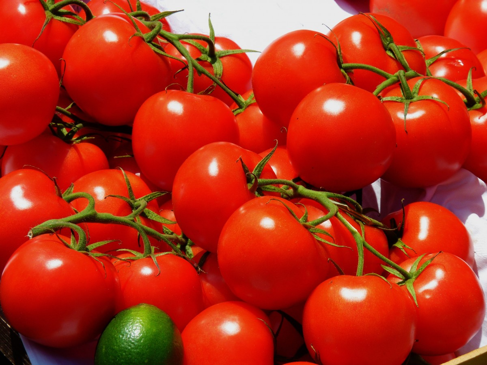
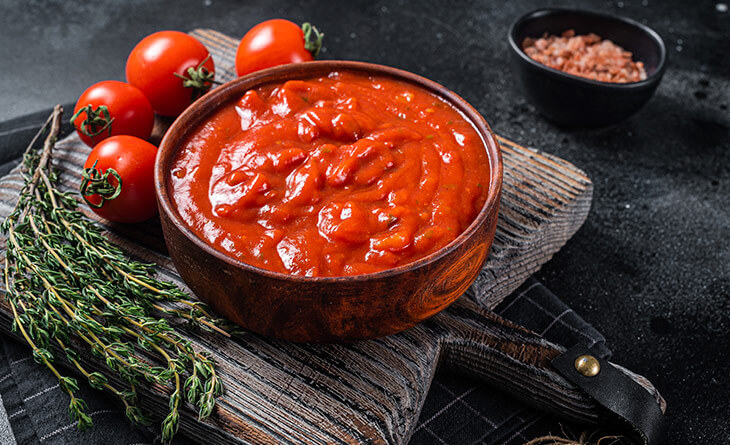

O tomate é uma fruta rica em vitamina C, vitamina A, vitamina K e licopeno, que é um potente antioxidante, ajudando a manter a saúde da pele, fortalecer o sistema imunológico e evitar doenças cardiovasculares, como infarto e aterosclerose.


1 cebola média picada
2 dentes de alhos picados
2 colheres de sopa de azeite
1 tablete de caldo de carne ou o que preferir
1/2 litros de água fervente
Orégano, manjericão, sal e pimenta (reino, branca ou preta) a gosto
Queijo parmesao ralado e orégano.